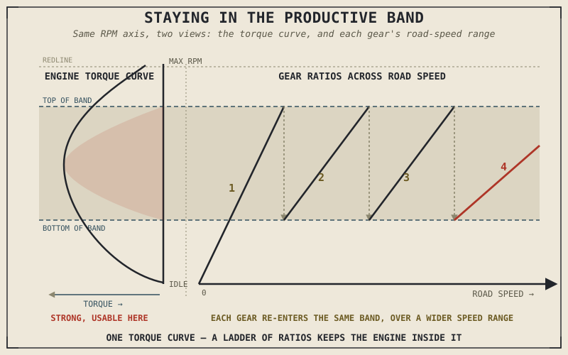

Fit a rear sprocket with a few more teeth, and a motorcycle will accelerate noticeably harder off the line — and also run out of top speed sooner, spin its engine faster at any given cruising speed, and burn more fuel doing it. Nothing about the engine changed. Every one of those effects comes from a single number quietly multiplying and dividing rotational speed and torque, in exact, unforgiving proportion, with no exceptions. That number is the gear ratio, and this chapter explains exactly what it does and why a motorcycle needs several different ones rather than just one.
Chapter 3.3 explained how a specific gear gets locked into place inside the gearbox. This chapter explains what actually happens, physically, once it is — the precise trade between torque and speed that every single gear ratio represents, and why the specific set of ratios chosen for a given gearbox is far from arbitrary.
The Trade Is Exact: Torque Up, Speed Down, in Fixed Proportion
A gear ratio compares the number of teeth on two meshed gears — say, a small gear with twelve teeth driving a larger gear with thirty-two, a ratio of roughly 2.67 to 1. In an idealized, frictionless case, that ratio does two things simultaneously and in exact proportion: it reduces rotational speed by that same factor, and it increases torque by that same factor. There is no way to get one effect without the other from a simple gear pair — this is the specific mechanical reality behind Chapter 3.1's claim that a transmission doesn't create power, only reshapes it. A lower gear, with a larger ratio, multiplies torque substantially at the direct cost of speed; a higher gear, with a ratio closer to or even below one to one, does the reverse.
This is why first gear feels strong but runs out almost immediately, while top gear feels comparatively weak off the line but carries the bike to its highest speed: each one is trading the identical underlying engine power, from the identical torque curve Chapter 2.12 described, for a different balance of torque and speed at the wheel.
Why Several Gears, Spaced Deliberately
Chapter 2.12 established that an engine only produces strong, usable torque across a specific band of its rev range, not evenly from idle to redline. A single gear ratio could never keep the engine inside that productive band across the full range of speeds a motorcycle needs to cover — from walking pace to highway cruising — which is exactly why a gearbox offers several ratios rather than one.
The specific number and spacing of those ratios is a deliberate engineering choice, not an arbitrary convenience. Each gear is chosen so that as the engine approaches the top of its useful rev range in one gear, shifting up drops it back down into a rev range where that same torque curve is still strong, rather than falling into the flat, weak portion Chapter 2.12 described near idle. Too few gears, spaced too far apart, and each shift drops the engine too far out of its productive band; too many gears, spaced too closely, adds weight, cost, and mechanical complexity — the same trade-off this book has returned to repeatedly — for diminishing returns once the engine's usable rev range is already being covered well.
A gear ratio doesn't change how much power an engine can make at a given RPM. It changes which RPM the engine happens to be at for a given road speed — and a well-chosen set of ratios keeps the engine inside its productive range far more of the time than any single ratio ever could.

A torque curve with the productive RPM band highlighted, shown alongside a sequence of gear ratios each keeping the engine within that band across a widening range of road speeds.
Overall Gearing: The Gearbox and Final Drive Together
The gearbox's internal ratio is only half the story. Chapter 3.6 will cover the final drive in full, but it's worth previewing here that the actual overall reduction between engine and rear wheel, in any given gear, is the gearbox ratio multiplied by the final drive ratio together — meaning a mechanic can adjust a bike's overall gearing meaningfully just by changing sprocket sizes at the final drive, without touching the gearbox's internal ratios at all. This is precisely why swapping a rear sprocket for one with a different tooth count is such a common, accessible way to reshape a motorcycle's character.
Taller overall gearing — a numerically smaller combined ratio — trades some acceleration for a higher potential top speed, a more relaxed cruising RPM, and typically better fuel economy at speed. Shorter overall gearing does the reverse: stronger acceleration in every gear, at the cost of top speed and a higher, thirstier engine speed at any given cruising pace. Neither is correct in the abstract — it depends entirely on whether a bike is built and ridden for stronger acceleration or for relaxed, efficient cruising, exactly the kind of trade-off this book has treated as the rule rather than the exception.
A Common Misconception, Cleared Up Early
It's a common and understandable assumption that changing a motorcycle's gearing — swapping sprockets for quicker acceleration, say — adds performance in some general sense. It doesn't add anything. Exactly as Chapter 3.1 established for the transmission as a whole, gearing changes simply reshape how the same underlying engine power gets delivered, trading acceleration for top speed or the reverse, using precisely the same torque curve from Chapter 2.12 that existed before the change. A rider who gears down for a quicker launch has not made the engine stronger — they've chosen to spend more of that same strength on acceleration and less on top-end speed and cruising efficiency, a real and sometimes worthwhile trade, but a trade, not a gain.
Where This Leads
This chapter explained what a gear ratio does and why several of them, carefully spaced, matter. What it left out is the physical mechanism that actually steps the gearbox from one ratio to the next in sequence — the shift drum and selector forks Chapter 3.3 mentioned only in passing. Chapter 3.5 covers that mechanism directly.
Key Concepts to Remember
- A gear ratio trades rotational speed for torque in exact, fixed proportion — multiplying one by a factor always divides the other by that same factor, with no way to gain one without giving up the other.
- Multiple gears exist because an engine only produces strong, usable torque across a limited band of its rev range, and no single ratio could keep the engine inside that band across a motorcycle's full speed range.
- Gear spacing is a deliberate trade-off: too few gears leave large gaps that drop the engine out of its productive range at each shift, while too many gears add weight and complexity for diminishing returns.
- Overall gearing is the gearbox ratio multiplied by the final drive ratio together, which is why changing sprocket size at the final drive can reshape a bike's character without touching the gearbox itself.
- Changing gearing does not add engine power — it trades acceleration for top speed and cruising efficiency, or the reverse, using the exact same underlying torque curve.
Cross-References
| ← Ch. 3.1 | Established that a transmission redistributes torque and speed rather than creating power; this chapter supplies the precise mechanical relationship behind that claim. |
| ← Ch. 2.12 | Established the shape of the engine's torque curve; this chapter shows how gear ratio spacing exists specifically to keep the engine within that curve's strongest band. |
| ← Ch. 3.3 | Described how a gear is selected and locked into place; this chapter explains what that selection actually does to torque and speed once it's engaged. |
| → Ch. 3.5 | Covers the shift drum and selector fork mechanism that physically steps the gearbox between the ratios described here. |
| → Ch. 3.6 | Covers the final drive in full, completing the overall gearing calculation this chapter previewed. |